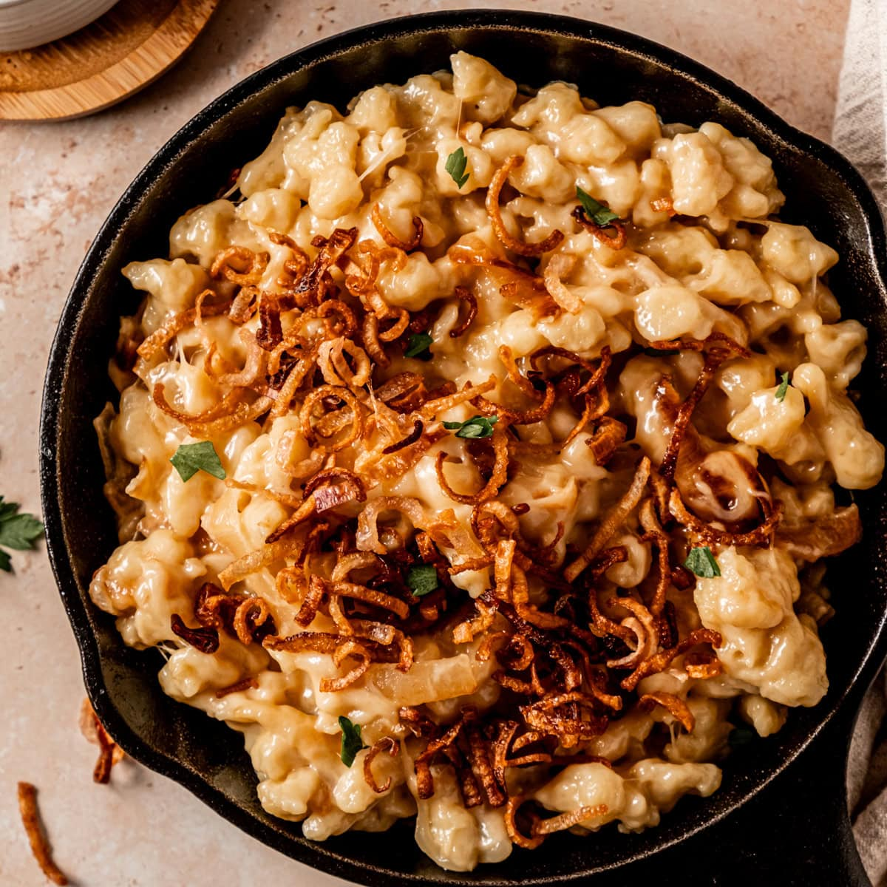

Startseite
Käsespätzle

Image of delicious Käsespätzle with onions on top
Von diesen köstlichen Kösespätzle können Spätzle-Fans nicht genug
bekommen.
Bei diesem Rezept greift jeder gerne zu.
Ingredients (in German)
- 500g Mehl
- 6 Stk. Eier
- 150ml Milch
- 1 Prise Salz
- 1 Prise Pfeffer
- 1 Prise Muskatnuss
- 1 EL Butter
- 1 Stk. Zwiebel
- 250g Bergkäse
- 150g Rässkäse od. Emmentaler
- 0.5 Bund Schnittlauch
Zubereitung
-
Für die Käsespätzle das Mehl, Eier und Milch in einer
Schüssel mit dem Kochlöffel vermischen (muss nicht wirklich glatt sein)
- der Teig sollte zähflüssig sein. Ist der Teig zu fest, kann man noch
ein wenig Wasser hinzufügen.
-
Nun noch Salz, Pfeffer und Muskatnuss zum Teig hinzufügen, gut verrühren
und für ca. 10 Minuten ruhen lassen.
-
In der Zwischenzeit die Zwiebel schälen und in feine Ringe schneiden.
Dann Butter in einer Pfanne erhitzen und die Zwiebelringe darin
goldbraun braten.
-
Jetzt den Teig durch das Spätzlesieb in kochendes Salzwasser (großer
Topf) durchlassen, einmal aufkochen und mit einem Lochsieb abschöpfen -
sobald die Spätzle an der Wasseroberfläche schwimmen. In eine Schüssel
geben (dabei ist es kein Problem wenn ein wenig "Spätzlewasser"
mitgeschöpft wird).
-
Sofort den geriebenen Käse dazugeben und mit dem Kochlöffel durchmischen
- der Käse sollte durch die noch heißen Spätzle ein wenig schmelzen und
"Fäden" ziehen.
-
Zum Schluss die Spätzle auf Tellern anrichten und mit den gebratenen
Zwiebeln und gehacktem Schnittlauch garnieren.